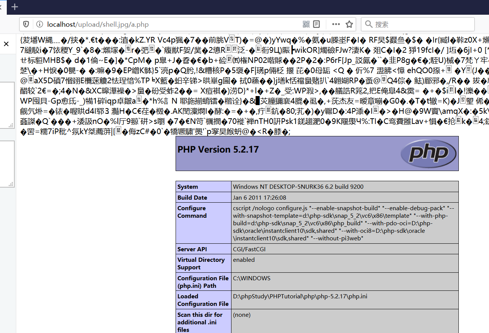

Nginx -系列漏洞复现
IIS是微软开发的web服务器，需要收费，主要用来跑asp.net asp php，只能在windows下运行。
Apache是Apache基金会的web服务器，免费，只支持静态界面，是html容器，应用范围广泛。
Tomcat是Apache基金会的java服务器，主要用来跑jsp php python等
Ngnix是反向代理服务器，它是代理，本身并不执行，是个传话筒，把用户提交的请求转发给web服务器，再把web服务器的结果转发给用户。为了提高性能，启用反向代理，实际的web服务器可以有很多台，而Ngnix放在前面，可以把这些web服务器整合成一个虚拟的更强大的服务
Nginx-文件解析漏洞
漏洞原理
nginx是一款高性能的web服务器，使用非常广泛，其不仅经常被用作反向代理，也可以非常好的支持PHP的运行。80sec发现其中存在一个较为严重的安全问题，默认情况下可能导致服务器错误的将任何类型的文件以PHP的方式进行解析，这将导致严重的安全问题，使得恶意的攻击者可能攻陷支持php的nginx服务器。
漏洞格式：test.jpg/a.php
漏洞复现
我们首先打开phpstudy切换版本为nginx-5.2.17

我们可以从phpstudy下的nginx的index.html复制到网站根目录下

我们从本地打开网站的该页面即可看到nginx的欢迎页面

我们在C盘根目录下新建shell.php写入如下代码。然后任意选择一张图片。

我们在命令行下选择使用管理员打开命令行，然后使用copy命令制作图片马。


然后我们在本地网站根目录下创建文件上传页面。

我们将我们刚刚制作好的图片马进行上传，发现提示上传成功。

我们在本地网站根目录下进行查看

我们在shell.jpg后添加/a.php或/b.php后发现可以成功解析。
漏洞防御
将php.ini文件中的cgi.fix_pathinfo的值设为0，这样php在解析1.php/1.jpg这样的目录时，只要1.jpg不存在就会显示404.

nginx-目录遍历漏洞
漏洞原理
目录遍历（路径遍历）是由于web服务器或者web应用程序对用户输入的文件名称的安全性验证不足而导致的一种安全漏洞。使得攻击者通过利用一些特殊字符就可以绕过服务器的安全限制，访问任意的文件（可以是web根目录以外的文件），甚至执行系统命令。
程序在实现上没有充分过滤用户输入的../之类的目录跳转符，导致恶意用户可以通过提交目录跳转来遍历服务器上的任意文件。
漏洞复现
我们首先需要将nginx的配置文件nginx.conf中autoindex off；改为on;

我们任意访问网站根目录下的某一文件夹，即可看到该目录下的所有文件，出现目录遍历漏洞。

漏洞防御
将nginx的配置文件nginx.conf下改为autoindex off即可；